2026 Higher Human Biology - Paper 2 questions
Source: Scottish Qualifications Authority (SQA) / Qualifications Scotland. This is a StemInteract HTML companion, not an official HTML edition. Extracted text is supplied alongside unaltered page images; use the images or original PDF for table layout, diagrams and symbols.
Jump to a question
PDF page 1
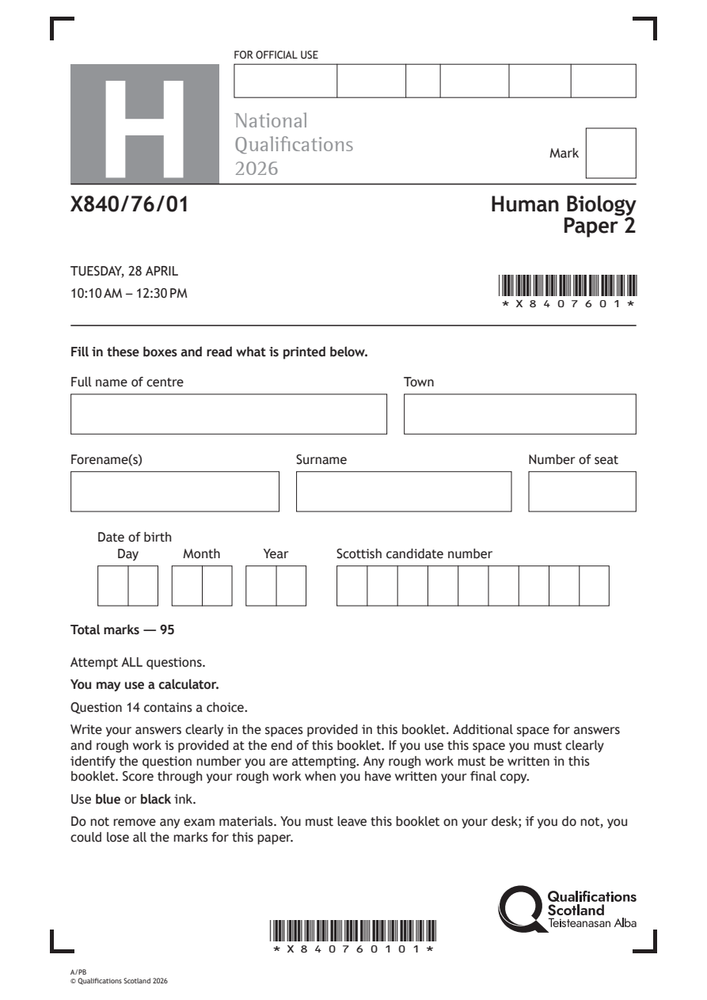
Selectable page text
FOR OFFICIAL USE
H
National
Qualications
Mark
2026
X840/76/01 Human Biology
Paper 2
TUESDAY, 28 APRIL
10:10 AM – 12:30 PM
*X8407601*
Fill in these boxes and read what is printed below.
Full name of centre Town
Forename(s) Surname Number of seat
Date of birth
Day Month Year Scottish candidate number
Total marks — 95
Attempt ALL questions.
You may use a calculator.
Question 14 contains a choice.
Write your answers clearly in the spaces provided in this booklet. Additional space for answers
and rough work is provided at the end of this booklet. If you use this space you must clearly
identify the question number you are attempting. Any rough work must be written in this
booklet. Score through your rough work when you have written your final copy.
Use blue or black ink.
Do not remove any exam materials. You must leave this booklet on your desk; if you do not, you
could lose all the marks for this paper.
*X840760101*
A/PB
© Qualifications Scotland 2026PDF page 2
Question 1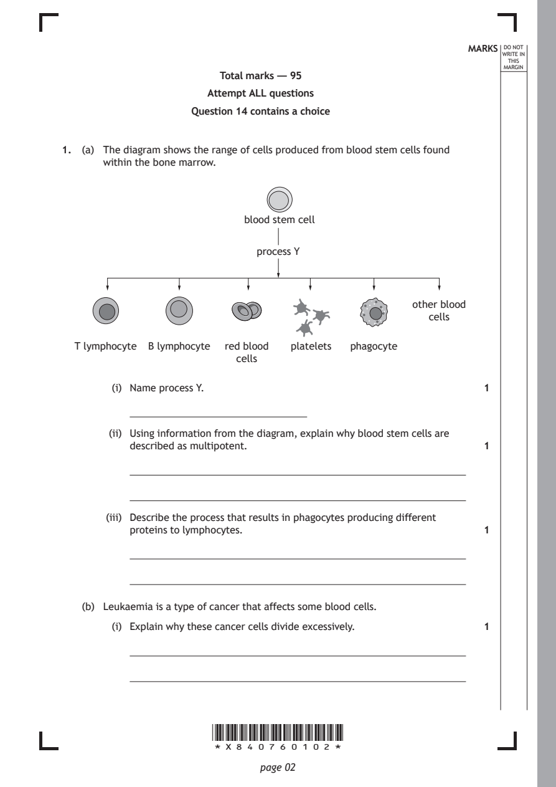
Selectable page text
MARKS DO NOT
WRITE IN
THIS
MARGIN
Total marks — 95
Attempt ALL questions
Question 14 contains a choice
1. (a) The diagram shows the range of cells produced from blood stem cells found
within the bone marrow.
blood stem cell
process Y
other blood
cells
T lymphocyte B lymphocyte red blood platelets phagocyte
cells
(i) Name process Y. 1
(ii) Using information from the diagram, explain why blood stem cells are
described as multipotent. 1
(iii) Describe the process that results in phagocytes producing different
proteins to lymphocytes. 1
(b) Leukaemia is a type of cancer that affects some blood cells.
(i) Explain why these cancer cells divide excessively. 1
*X840760102*
page 02PDF page 3
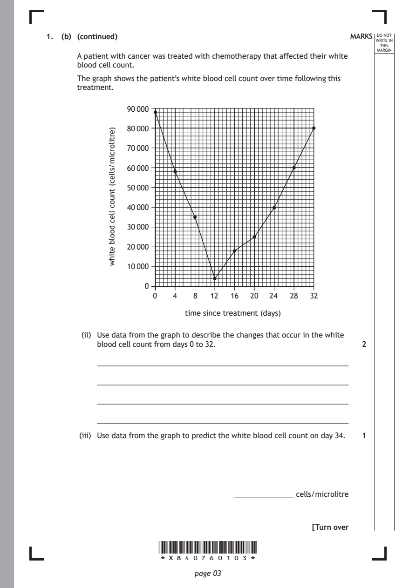
Selectable page text
1. (b) (continued) MARKS DO NOT
WRITE IN
THIS
MARGIN
A patient with cancer was treated with chemotherapy that affected their white
blood cell count.
The graph shows the patient’s white blood cell count over time following this
treatment.
time since treatment (days)
*X840760103*
page 03
)ertilorcim/sllec(
tnuoc
llec
doolb
etihw
90 000
80 000
70 000
60 000
50 000
40 000
30 000
20 000
10 000
0
0 4 8 12 16 20 24 28 32
(ii) Use data from the graph to describe the changes that occur in the white
blood cell count from days 0 to 32. 2
(iii) Use data from the graph to predict the white blood cell count on day 34. 1
���������������������������� cells/microlitre
[Turn overPDF page 4
Question 2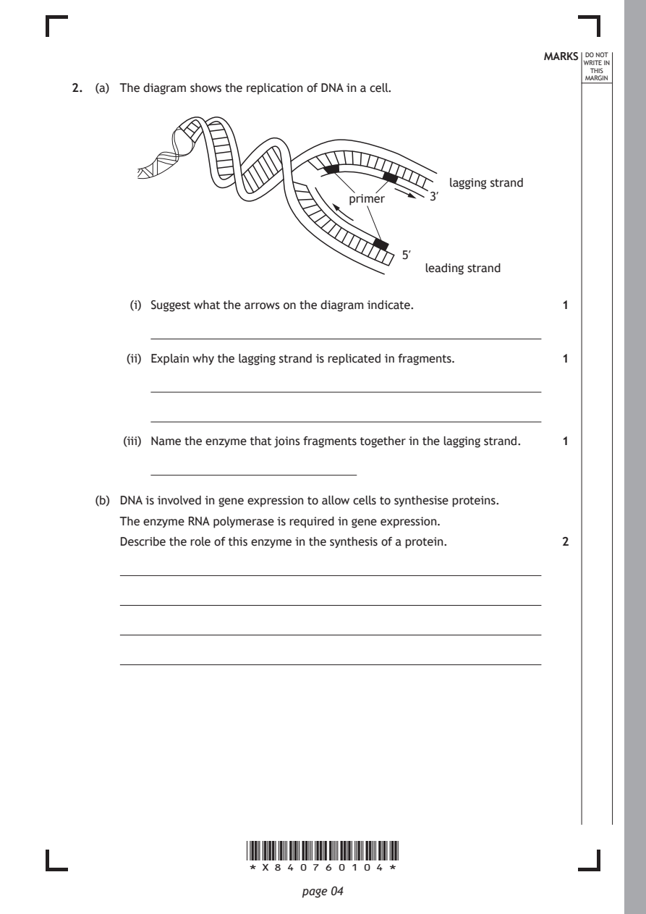
Selectable page text
MARKS DO NOT
WRITE IN
THIS
MARGIN
2. (a) The diagram shows the replication of DNA in a cell.
lagging strand
primer 3′
5′
leading strand
(i) Suggest what the arrows on the diagram indicate. 1
(ii) Explain why the lagging strand is replicated in fragments. 1
(iii) Name the enzyme that joins fragments together in the lagging strand. 1
(b) DNA is involved in gene expression to allow cells to synthesise proteins.
The enzyme RNA polymerase is required in gene expression.
Describe the role of this enzyme in the synthesis of a protein. 2
*X840760104*
page 04PDF page 5
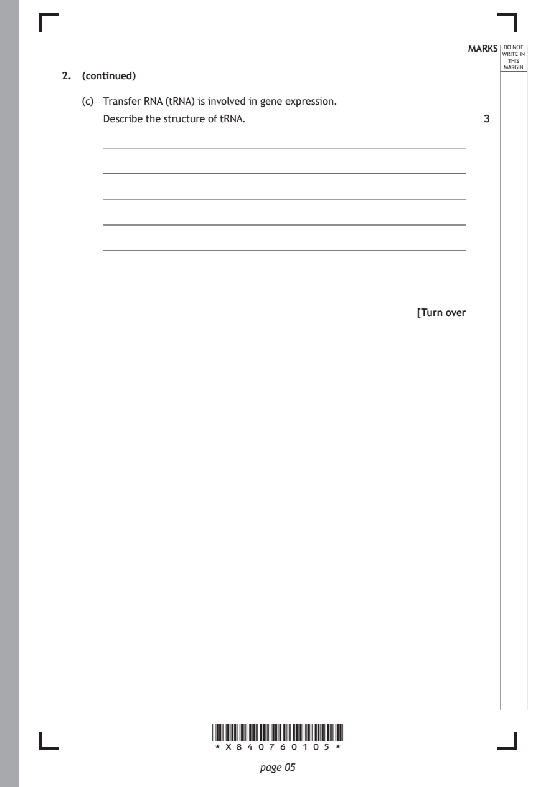
Selectable page text
MARKS DO NOT
WRITE IN
THIS
MARGIN
2. (continued)
(c) Transfer RNA (tRNA) is involved in gene expression.
Describe the structure of tRNA. 3
[Turn over
*X840760105*
page 05PDF page 6
Question 3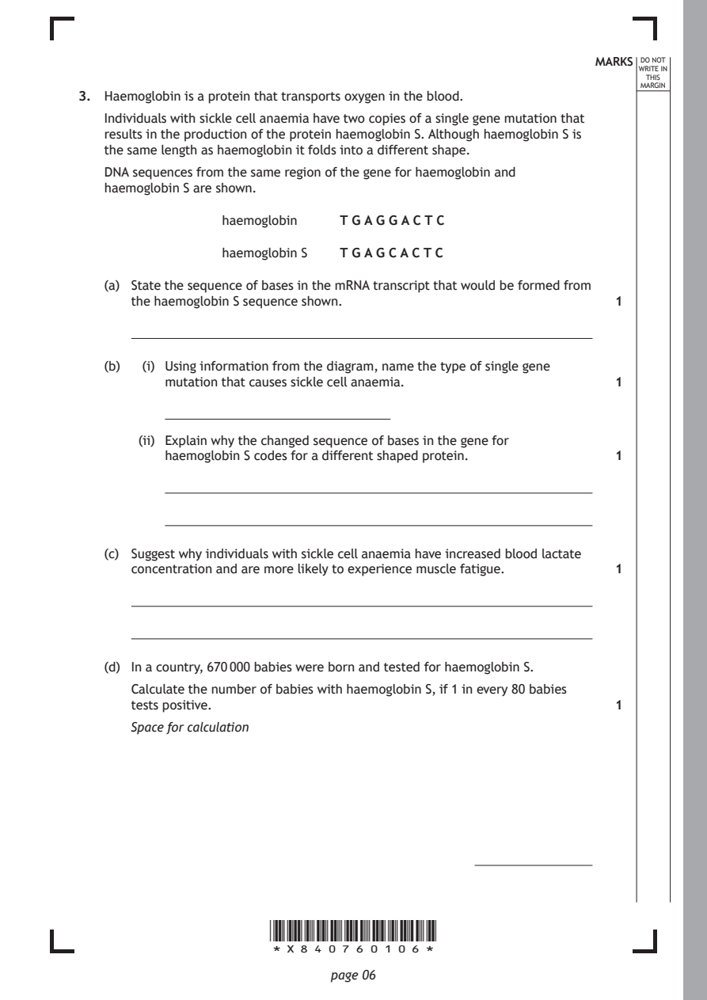
Selectable page text
MARKS DO NOT
WRITE IN
THIS
MARGIN
3. Haemoglobin is a protein that transports oxygen in the blood.
Individuals with sickle cell anaemia have two copies of a single gene mutation that
results in the production of the protein haemoglobin S. Although haemoglobin S is
the same length as haemoglobin it folds into a different shape.
DNA sequences from the same region of the gene for haemoglobin and
haemoglobin S are shown.
haemoglobin T G A G G A C T C
haemoglobin S T G A G C A C T C
(a) State the sequence of bases in the mRNA transcript that would be formed from
the haemoglobin S sequence shown. 1
(b) (i) Using information from the diagram, name the type of single gene
mutation that causes sickle cell anaemia. 1
(ii) Explain why the changed sequence of bases in the gene for
haemoglobin S codes for a different shaped protein. 1
(c) Suggest why individuals with sickle cell anaemia have increased blood lactate
concentration and are more likely to experience muscle fatigue. 1
(d) In a country, 670 000 babies were born and tested for haemoglobin S.
Calculate the number of babies with haemoglobin S, if 1 in every 80 babies
tests positive. 1
Space for calculation
*X840760106*
page 06PDF page 7
Question 4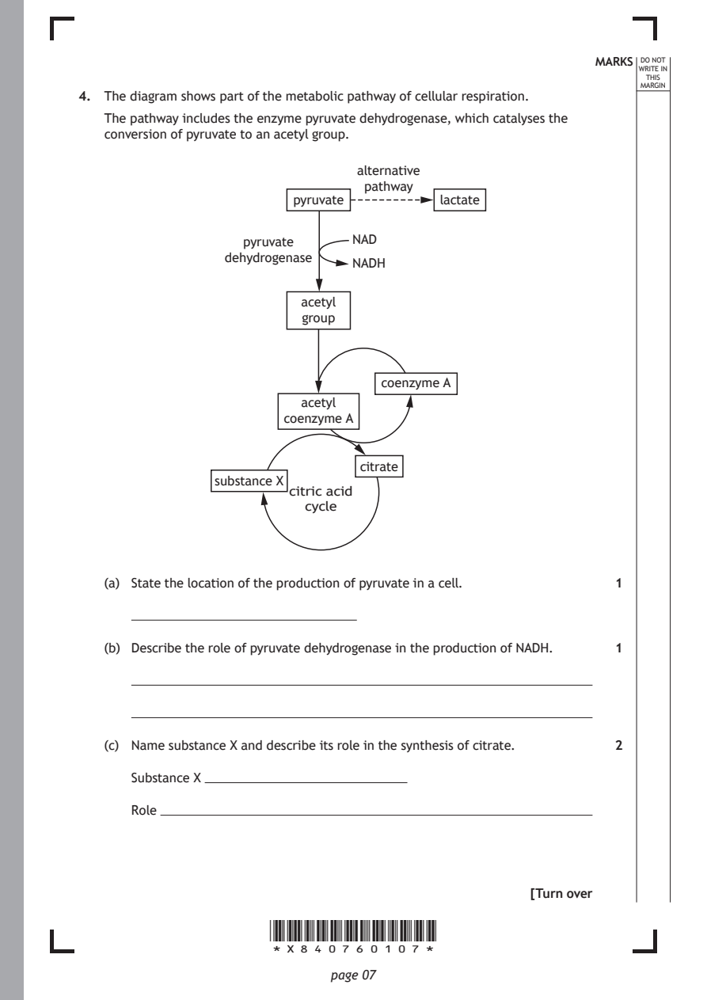
Selectable page text
MARKS DO NOT
WRITE IN
THIS
MARGIN
4. The diagram shows part of the metabolic pathway of cellular respiration.
The pathway includes the enzyme pyruvate dehydrogenase, which catalyses the
conversion of pyruvate to an acetyl group.
alternative
pathway
pyruvate lactate
pyruvate NAD
dehydrogenase
NADH
acetyl
group
coenzyme A
acetyl
coenzyme A
citrate
substance X
citric acid
cycle
(a) State the location of the production of pyruvate in a cell. 1
(b) Describe the role of pyruvate dehydrogenase in the production of NADH. 1
(c) Name substance X and describe its role in the synthesis of citrate. 2
Substance X
Role
[Turn over
*X840760107*
page 07PDF page 8
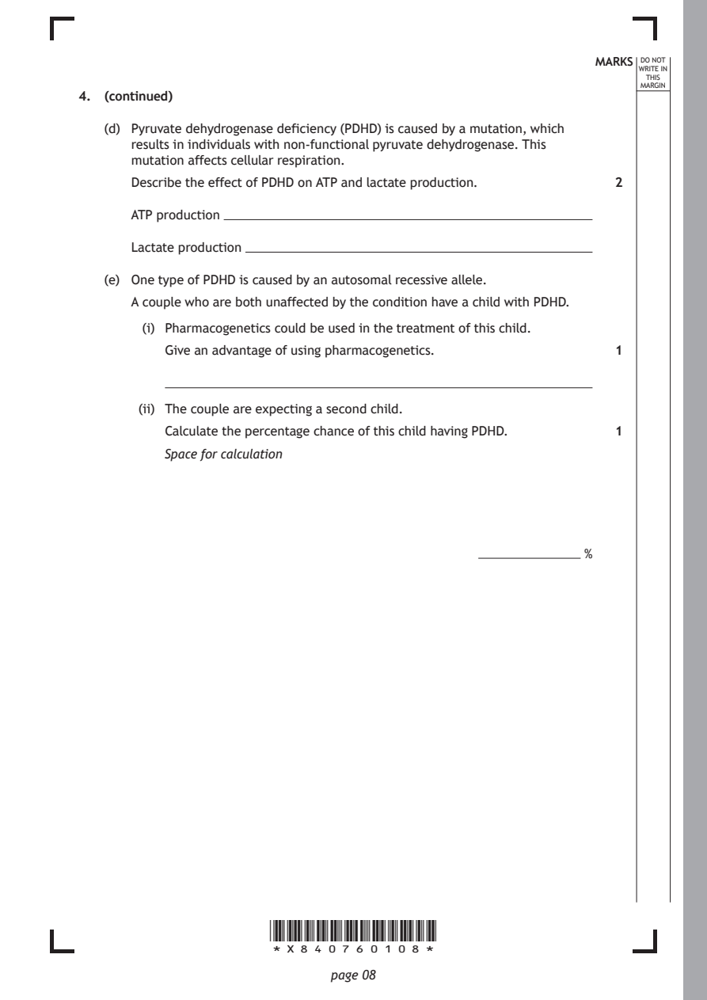
Selectable page text
MARKS DO NOT
WRITE IN
THIS
MARGIN
4. (continued)
(d) Pyruvate dehydrogenase deficiency (PDHD) is caused by a mutation, which
results in individuals with non‑functional pyruvate dehydrogenase. This
mutation affects cellular respiration.
Describe the effect of PDHD on ATP and lactate production. 2
ATP production
Lactate production
(e) One type of PDHD is caused by an autosomal recessive allele.
A couple who are both unaffected by the condition have a child with PDHD.
(i) Pharmacogenetics could be used in the treatment of this child.
Give an advantage of using pharmacogenetics. 1
(ii) The couple are expecting a second child.
Calculate the percentage chance of this child having PDHD. 1
Space for calculation
���������������������������� %
*X840760108*
page 08PDF page 9
Selectable page text
[Turn over for next question
DO NOT WRITE ON THIS PAGE
*X840760109*
page 09PDF page 10
Question 5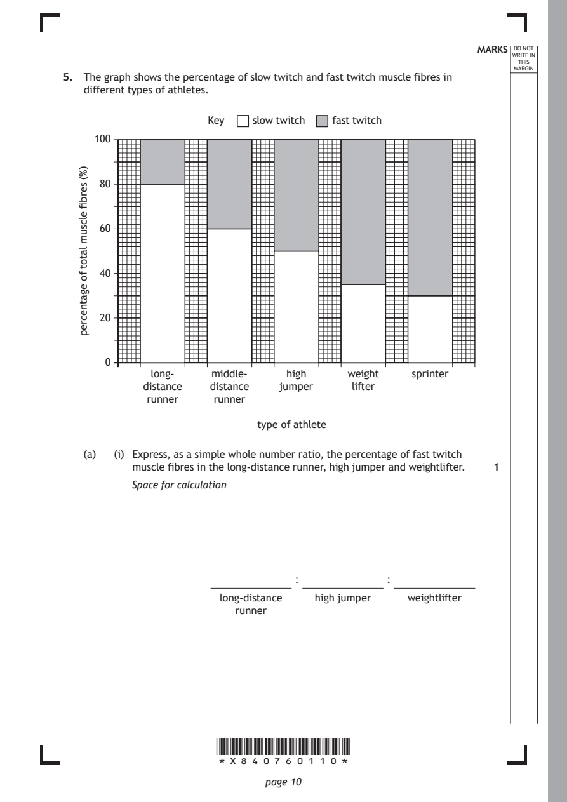
Selectable page text
MARKS DO NOT
WRITE IN
THIS
MARGIN
5. The graph shows the percentage of slow twitch and fast twitch muscle fibres in
different types of athletes.
100
80
60
40
20
0
*X840760110*
page 10
)%(
serbfi
elcsum
latot
fo
egatnecrep
Key slow twitch fast twitch
long- middle- high weight sprinter
distance distance jumper lifter
runner runner
type of athlete
(a) (i) Express, as a simple whole number ratio, the percentage of fast twitch
muscle fibres in the long‑distance runner, high jumper and weightlifter. 1
Space for calculation
: :
long‑distance high jumper weightlifter
runnerPDF page 11
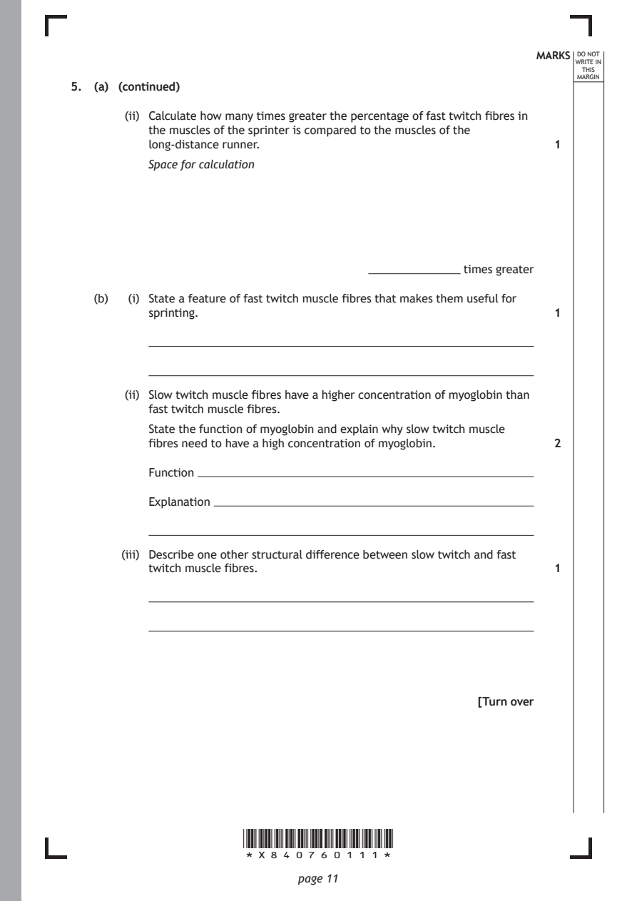
Selectable page text
MARKS DO NOT
WRITE IN
THIS
MARGIN
5. (a) (continued)
(ii) Calculate how many times greater the percentage of fast twitch fibres in
the muscles of the sprinter is compared to the muscles of the
long‑distance runner. 1
Space for calculation
���������������������������� times greater
(b) (i) State a feature of fast twitch muscle fibres that makes them useful for
sprinting. 1
(ii) Slow twitch muscle fibres have a higher concentration of myoglobin than
fast twitch muscle fibres.
State the function of myoglobin and explain why slow twitch muscle
fibres need to have a high concentration of myoglobin. 2
Function
Explanation
(iii) Describe one other structural difference between slow twitch and fast
twitch muscle fibres. 1
[Turn over
*X840760111*
page 11PDF page 12
Question 6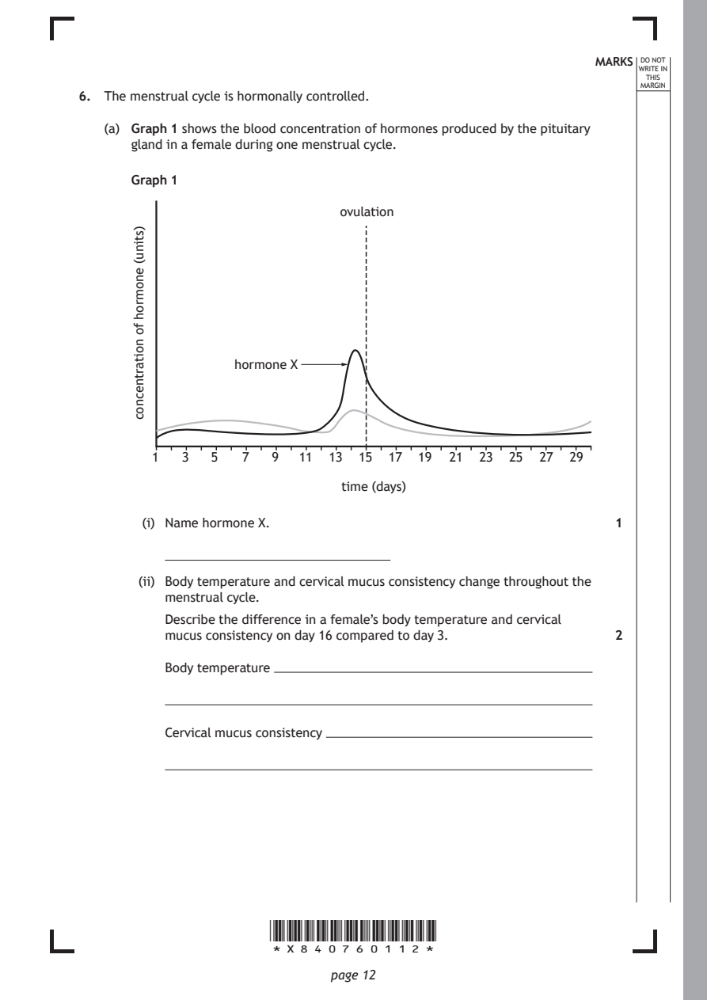
Selectable page text
MARKS DO NOT
WRITE IN
THIS
MARGIN
6. The menstrual cycle is hormonally controlled.
(a) Graph 1 shows the blood concentration of hormones produced by the pituitary
gland in a female during one menstrual cycle.
Graph 1
ovulation
hormone X
time (days)
*X840760112*
page 12
)stinu(
enomroh
fo
noitartnecnoc
1 3 5 7 9 11 13 15 17 19 21 23 25 27 29
(i) Name hormone X. 1
(ii) Body temperature and cervical mucus consistency change throughout the
menstrual cycle.
Describe the difference in a female’s body temperature and cervical
mucus consistency on day 16 compared to day 3. 2
Body temperature
Cervical mucus consistencyPDF page 13
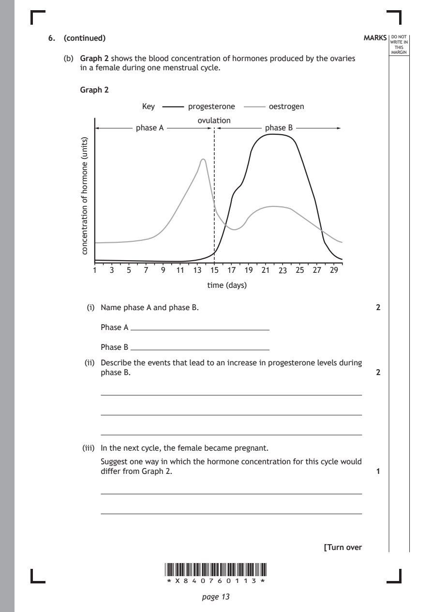
Selectable page text
6. (continued) MARKS DO NOT
WRITE IN
THIS
MARGIN
(b) Graph 2 shows the blood concentration of hormones produced by the ovaries
in a female during one menstrual cycle.
Graph 2
Key progesterone oestrogen
ovulation
phase A phase B
time (days)
*X840760113*
page 13
)stinu(
enomroh
fo
noitartnecnoc
1 3 5 7 9 11 13 15 17 19 21 23 25 27 29
(i) Name phase A and phase B. 2
Phase A
Phase B
(ii) Describe the events that lead to an increase in progesterone levels during
phase B. 2
(iii) In the next cycle, the female became pregnant.
Suggest one way in which the hormone concentration for this cycle would
differ from Graph 2. 1
[Turn overPDF page 14
Question 7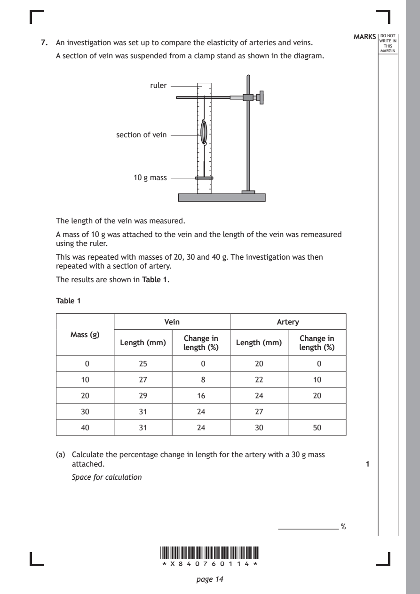
Selectable page text
MARKS DO NOT
7. An investigation was set up to compare the elasticity of arteries and veins. WRITE IN
THIS
MARGIN
A section of vein was suspended from a clamp stand as shown in the diagram.
ruler
section of vein
10 g mass
The length of the vein was measured.
A mass of 10 g was attached to the vein and the length of the vein was remeasured
using the ruler.
This was repeated with masses of 20, 30 and 40 g. The investigation was then
repeated with a section of artery.
The results are shown in Table 1.
Table 1
Vein Artery
Mass (g)
Change in Change in
Length (mm) Length (mm)
length (%) length (%)
0 25 0 20 0
10 27 8 22 10
20 29 16 24 20
30 31 24 27
40 31 24 30 50
(a) Calculate the percentage change in length for the artery with a 30 g mass
attached. 1
Space for calculation
���������������������������� %
*X840760114*
page 14PDF page 15
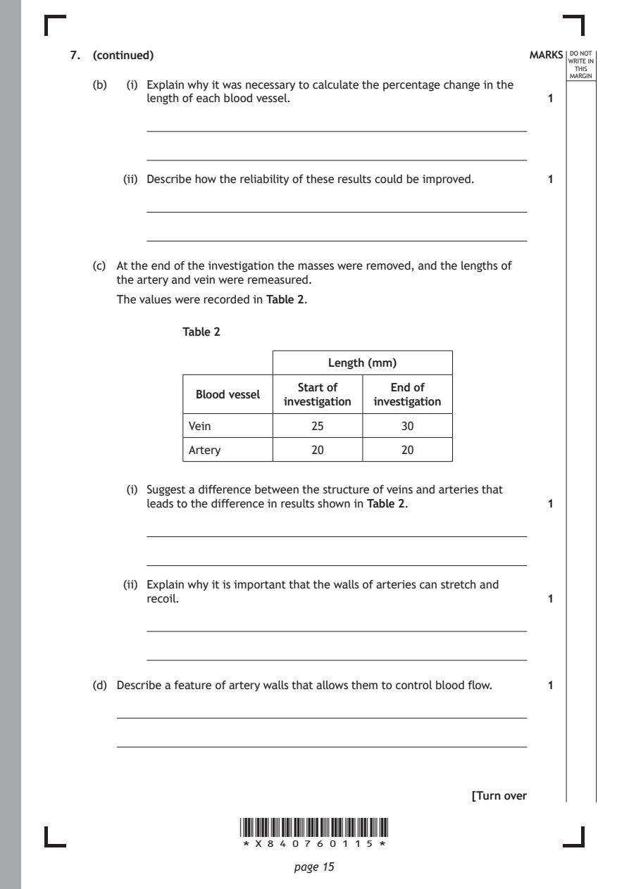
Selectable page text
7. (continued) MARKS DO NOT
WRITE IN
THIS
MARGIN
(b) (i) Explain why it was necessary to calculate the percentage change in the
length of each blood vessel. 1
(ii) Describe how the reliability of these results could be improved. 1
(c) At the end of the investigation the masses were removed, and the lengths of
the artery and vein were remeasured.
The values were recorded in Table 2.
Table 2
Length (mm)
Start of End of
Blood vessel
investigation investigation
Vein 25 30
Artery 20 20
(i) Suggest a difference between the structure of veins and arteries that
leads to the difference in results shown in Table 2. 1
(ii) Explain why it is important that the walls of arteries can stretch and
recoil. 1
(d) Describe a feature of artery walls that allows them to control blood flow. 1
[Turn over
*X840760115*
page 15PDF page 16
Question 8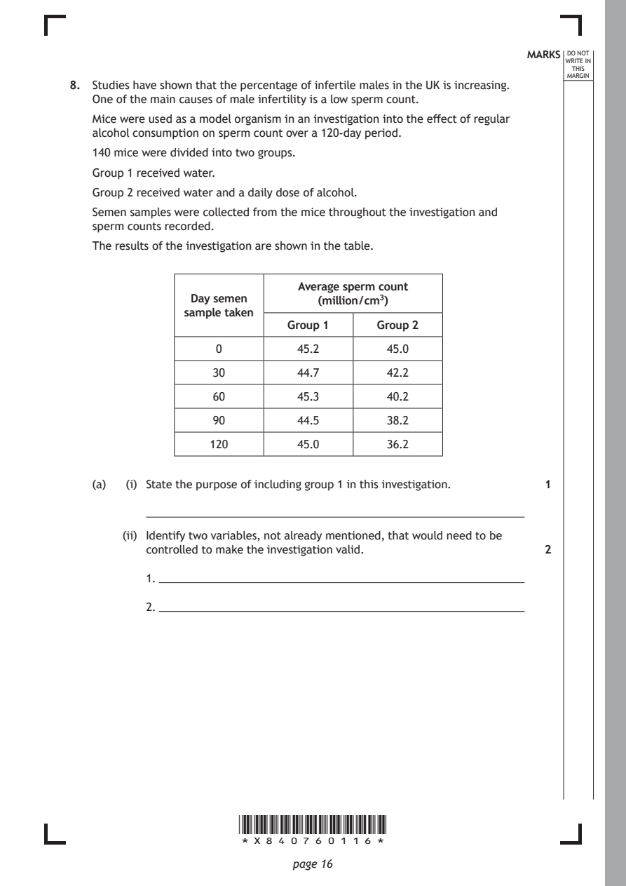
Selectable page text
MARKS DO NOT
WRITE IN
THIS
MARGIN
8. Studies have shown that the percentage of infertile males in the UK is increasing.
One of the main causes of male infertility is a low sperm count.
Mice were used as a model organism in an investigation into the effect of regular
alcohol consumption on sperm count over a 120‑day period.
140 mice were divided into two groups.
Group 1 received water.
Group 2 received water and a daily dose of alcohol.
Semen samples were collected from the mice throughout the investigation and
sperm counts recorded.
The results of the investigation are shown in the table.
Average sperm count
Day semen (million/cm3)
sample taken
Group 1 Group 2
0 45.2 45.0
30 44.7 42.2
60 45.3 40.2
90 44.5 38.2
120 45.0 36.2
(a) (i) State the purpose of including group 1 in this investigation. 1
(ii) Identify two variables, not already mentioned, that would need to be
controlled to make the investigation valid. 2
1.
2.
*X840760116*
page 16PDF page 17
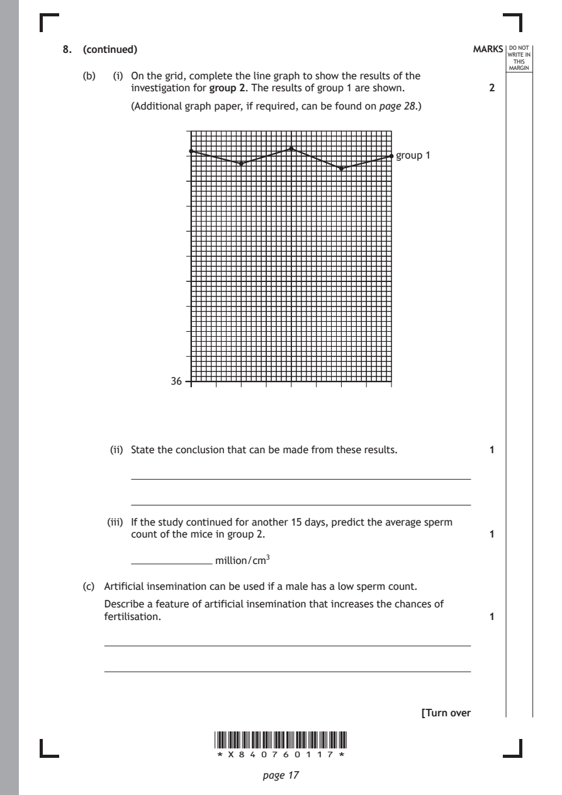
Selectable page text
8. (continued) MARKS DO NOT
WRITE IN
THIS
MARGIN
(b) (i) On the grid, complete the line graph to show the results of the
investigation for group 2. The results of group 1 are shown. 2
(Additional graph paper, if required, can be found on page 28.)
group 1
36
(ii) State the conclusion that can be made from these results. 1
(iii) If the study continued for another 15 days, predict the average sperm
count of the mice in group 2. 1
���������������������������� million/cm3
(c) Artificial insemination can be used if a male has a low sperm count.
Describe a feature of artificial insemination that increases the chances of
fertilisation. 1
[Turn over
*X840760117*
page 17PDF page 18
Question 9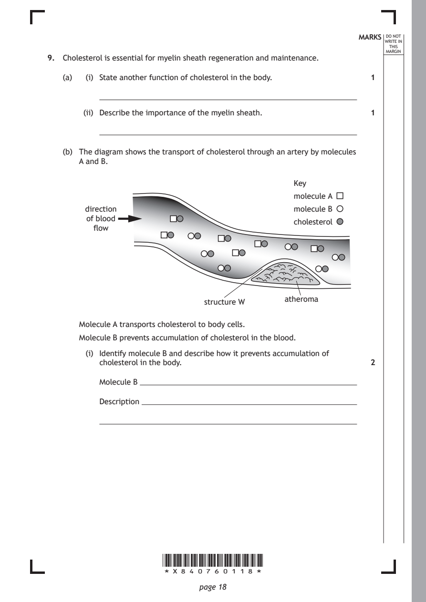
Selectable page text
MARKS DO NOT
WRITE IN
THIS
MARGIN
9. Cholesterol is essential for myelin sheath regeneration and maintenance.
(a) (i) State another function of cholesterol in the body. 1
(ii) Describe the importance of the myelin sheath. 1
(b) The diagram shows the transport of cholesterol through an artery by molecules
A and B.
Key
molecule A
direction molecule B
of blood
cholesterol
flow
atheroma
structure W
Molecule A transports cholesterol to body cells.
Molecule B prevents accumulation of cholesterol in the blood.
(i) Identify molecule B and describe how it prevents accumulation of
cholesterol in the body. 2
Molecule B
Description
*X840760118*
page 18PDF page 19
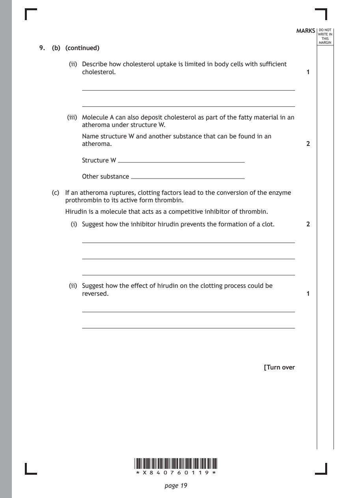
Selectable page text
MARKS DO NOT
WRITE IN
THIS
MARGIN
9. (b) (continued)
(ii) Describe how cholesterol uptake is limited in body cells with sufficient
cholesterol. 1
(iii) Molecule A can also deposit cholesterol as part of the fatty material in an
atheroma under structure W.
Name structure W and another substance that can be found in an
atheroma. 2
Structure W
Other substance
(c) If an atheroma ruptures, clotting factors lead to the conversion of the enzyme
prothrombin to its active form thrombin.
Hirudin is a molecule that acts as a competitive inhibitor of thrombin.
(i) Suggest how the inhibitor hirudin prevents the formation of a clot. 2
(ii) Suggest how the effect of hirudin on the clotting process could be
reversed. 1
[Turn over
*X840760119*
page 19PDF page 20
Question 10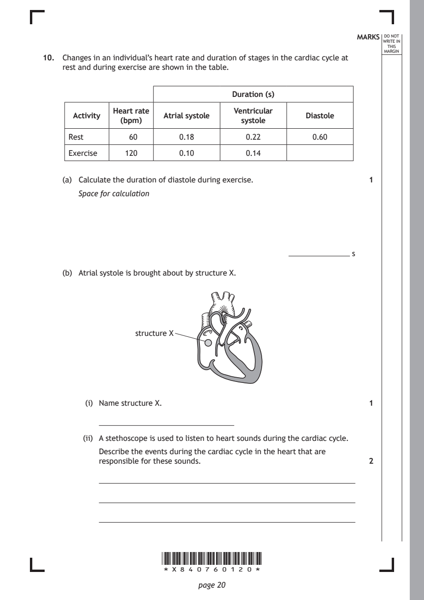
Selectable page text
MARKS DO NOT
WRITE IN
THIS
MARGIN
10. Changes in an individual’s heart rate and duration of stages in the cardiac cycle at
rest and during exercise are shown in the table.
Duration (s)
Heart rate Ventricular
Activity Atrial systole Diastole
(bpm) systole
Rest 60 0.18 0.22 0.60
Exercise 120 0.10 0.14
(a) Calculate the duration of diastole during exercise. 1
Space for calculation
���������������������������� s
(b) Atrial systole is brought about by structure X.
structure X
(i) Name structure X. 1
(ii) A stethoscope is used to listen to heart sounds during the cardiac cycle.
Describe the events during the cardiac cycle in the heart that are
responsible for these sounds. 2
*X840760120*
page 20PDF page 21
Question 11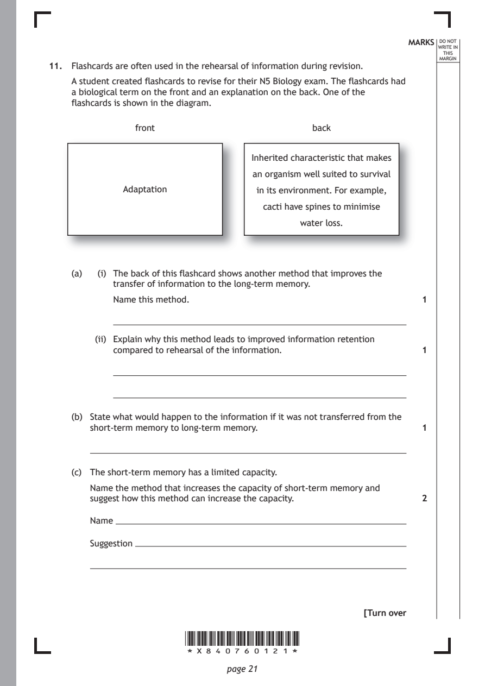
Selectable page text
MARKS DO NOT
WRITE IN
THIS
MARGIN
11. Flashcards are often used in the rehearsal of information during revision.
A student created flashcards to revise for their N5 Biology exam. The flashcards had
a biological term on the front and an explanation on the back. One of the
flashcards is shown in the diagram.
front back
Inherited characteristic that makes
an organism well suited to survival
Adaptation in its environment. For example,
cacti have spines to minimise
water loss.
(a) (i) The back of this flashcard shows another method that improves the
transfer of information to the long‑term memory.
Name this method. 1
(ii) Explain why this method leads to improved information retention
compared to rehearsal of the information. 1
(b) State what would happen to the information if it was not transferred from the
short‑term memory to long‑term memory. 1
(c) The short‑term memory has a limited capacity.
Name the method that increases the capacity of short‑term memory and
suggest how this method can increase the capacity. 2
Name
Suggestion
[Turn over
*X840760121*
page 21PDF page 22
Question 12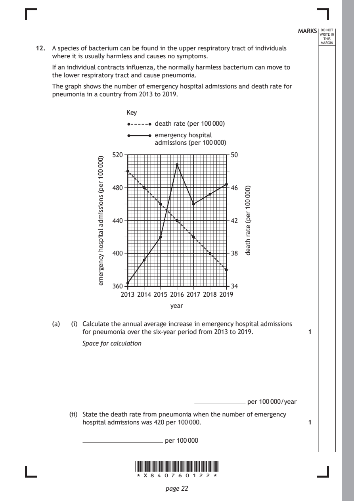
Selectable page text
MARKS DO NOT
WRITE IN
THIS
MARGIN
12. A species of bacterium can be found in the upper respiratory tract of individuals
where it is usually harmless and causes no symptoms.
If an individual contracts influenza, the normally harmless bacterium can move to
the lower respiratory tract and cause pneumonia.
The graph shows the number of emergency hospital admissions and death rate for
pneumonia in a country from 2013 to 2019.
2013 2014 2015 2016 2017 2018 2019
year
*X840760122*
page 22
)000
001
rep(
snoissimda
latipsoh
ycnegreme
)000
001
rep(
etar
htaed
Key
death rate (per 100 000)
emergency hospital
admissions (per 100 000)
520 50
480 46
440 42
400 38
360 34
(a) (i) Calculate the annual average increase in emergency hospital admissions
for pneumonia over the six‑year period from 2013 to 2019. 1
Space for calculation
���������������������������� per 100 000/year
(ii) State the death rate from pneumonia when the number of emergency
hospital admissions was 420 per 100 000. 1
�������������������������������������������� per 100 000PDF page 23
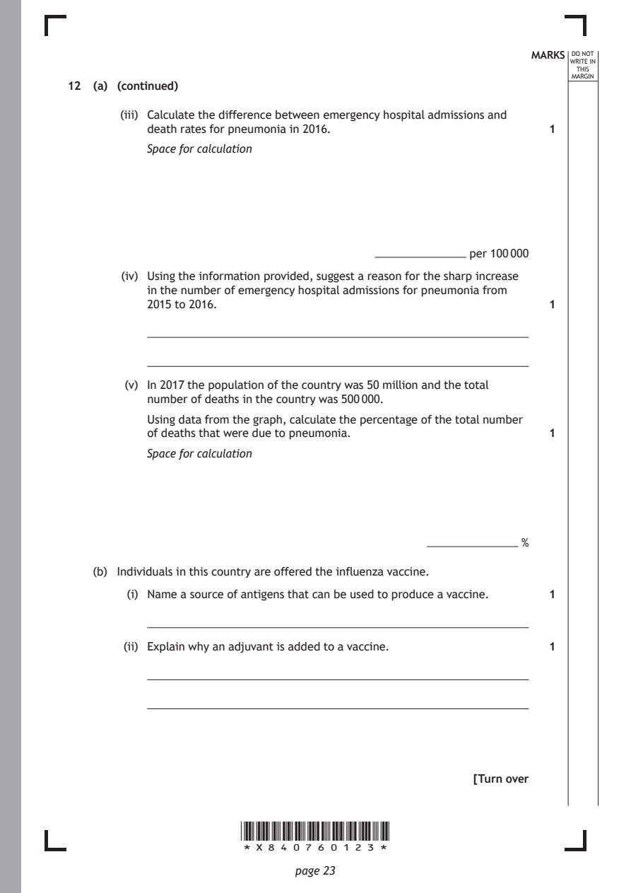
Selectable page text
MARKS DO NOT
WRITE IN
THIS
MARGIN
12 (a) (continued)
(iii) Calculate the difference between emergency hospital admissions and
death rates for pneumonia in 2016. 1
Space for calculation
���������������������������� per 100 000
(iv) Using the information provided, suggest a reason for the sharp increase
in the number of emergency hospital admissions for pneumonia from
2015 to 2016. 1
(v) In 2017 the population of the country was 50 million and the total
number of deaths in the country was 500 000.
Using data from the graph, calculate the percentage of the total number
of deaths that were due to pneumonia. 1
Space for calculation
���������������������������� %
(b) Individuals in this country are offered the influenza vaccine.
(i) Name a source of antigens that can be used to produce a vaccine. 1
(ii) Explain why an adjuvant is added to a vaccine. 1
[Turn over
*X840760123*
page 23PDF page 24
Question 13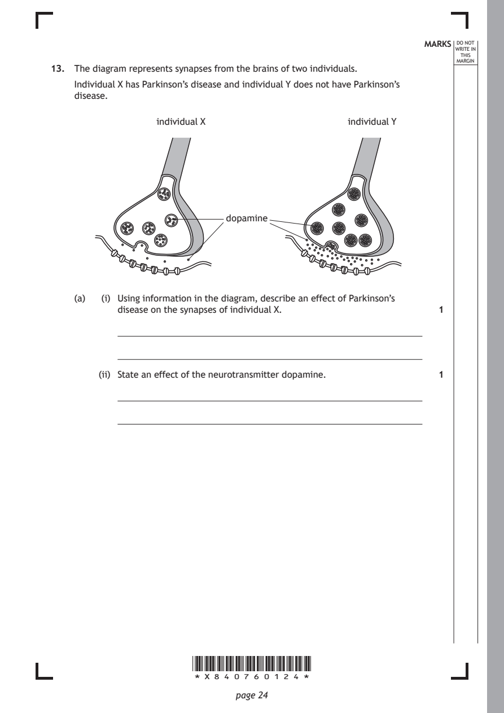
Selectable page text
MARKS DO NOT
WRITE IN
THIS
MARGIN
13. The diagram represents synapses from the brains of two individuals.
Individual X has Parkinson’s disease and individual Y does not have Parkinson’s
disease.
individual X individual Y
dopamine
(a) (i) Using information in the diagram, describe an effect of Parkinson’s
disease on the synapses of individual X. 1
(ii) State an effect of the neurotransmitter dopamine. 1
*X840760124*
page 24PDF page 25
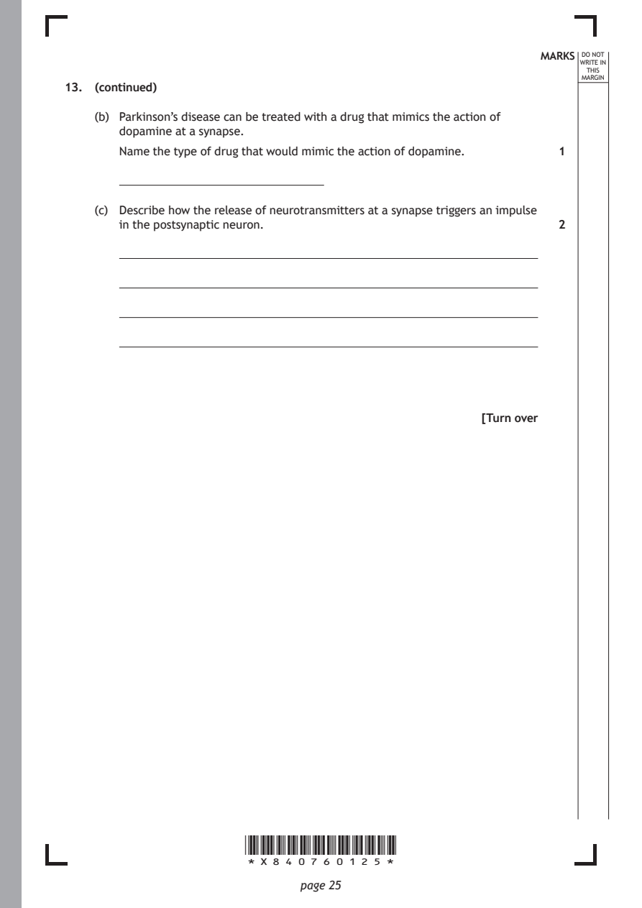
Selectable page text
MARKS DO NOT
WRITE IN
THIS
MARGIN
13. (continued)
(b) Parkinson’s disease can be treated with a drug that mimics the action of
dopamine at a synapse.
Name the type of drug that would mimic the action of dopamine. 1
(c) Describe how the release of neurotransmitters at a synapse triggers an impulse
in the postsynaptic neuron. 2
[Turn over
*X840760125*
page 25PDF page 26
Question 14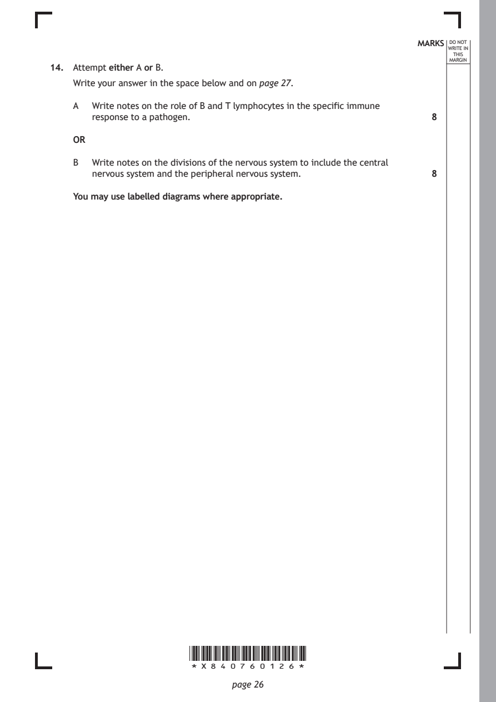
Selectable page text
MARKS DO NOT
WRITE IN
THIS
MARGIN
14. Attempt either A or B.
Write your answer in the space below and on page 27.
A Write notes on the role of B and T lymphocytes in the specific immune
response to a pathogen. 8
OR
B Write notes on the divisions of the nervous system to include the central
nervous system and the peripheral nervous system. 8
You may use labelled diagrams where appropriate.
*X840760126*
page 26PDF page 27
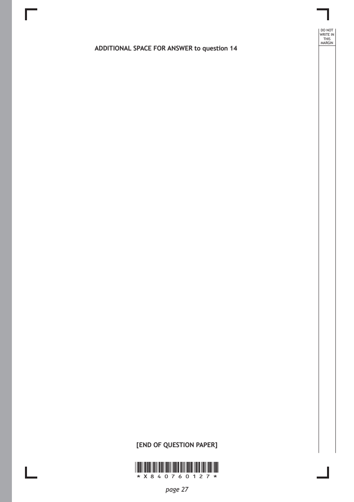
Selectable page text
DO NOT
WRITE IN
THIS
MARGIN
ADDITIONAL SPACE FOR ANSWER to question 14
[END OF QUESTION PAPER]
*X840760127*
page 27PDF page 28
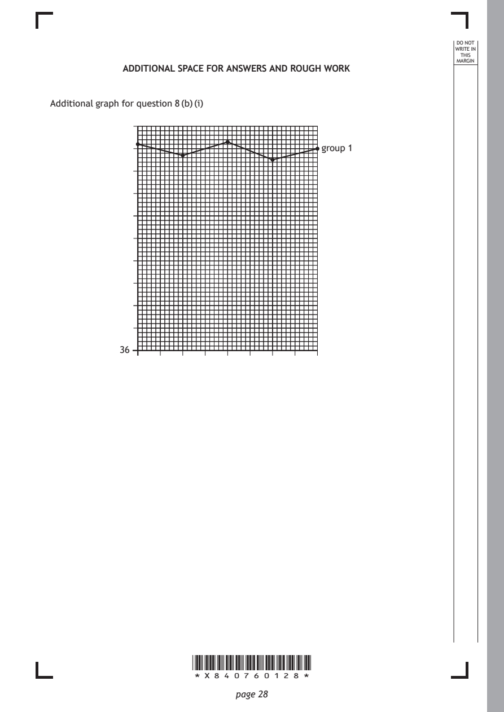
Selectable page text
DO NOT
WRITE IN
THIS
MARGIN
ADDITIONAL SPACE FOR ANSWERS AND ROUGH WORK
Additional graph for question 8 (b) (i)
group 1
36
*X840760128*
page 28PDF page 29
Selectable page text
DO NOT
WRITE IN
THIS
MARGIN
ADDITIONAL SPACE FOR ANSWERS AND ROUGH WORK
*X840760129*
page 29PDF page 30
Selectable page text
DO NOT
WRITE IN
THIS
MARGIN
ADDITIONAL SPACE FOR ANSWERS AND ROUGH WORK
*X840760130*
page 30PDF page 31

Selectable page text
[BLANK PAGE]
DO NOT WRITE ON THIS PAGE
*X840760131*
page 31PDF page 32
Selectable page text
[BLANK PAGE]
DO NOT WRITE ON THIS PAGE
*X840760132*
page 32